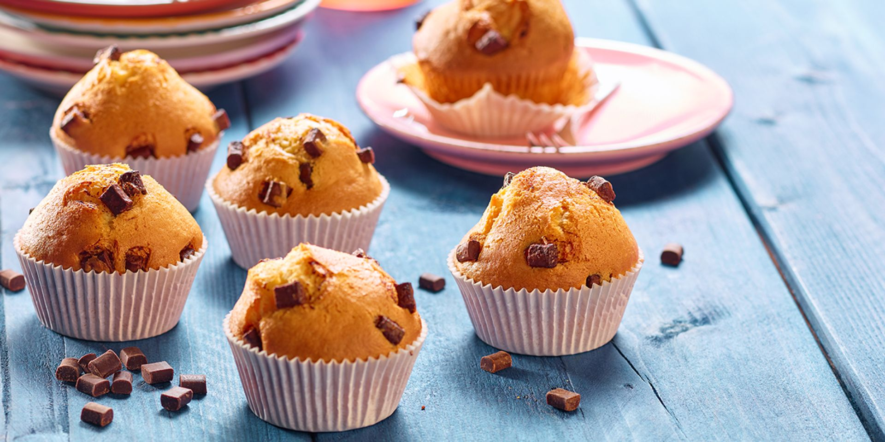

Muffins

Description
Every Sunday morning, our family would go to my grandmother's house for her homemade muffins. I finally got the basic recipe and through years of experimenting I finally came up with the right portions to make them taste like hers. Please try and enjoy.
Ingredients
- 1 ¾ cups all-purpose flour
- 1 tablespoon baking powder
- ¼ teaspoon salt
- ½ cup butter, softened
- 1 cup white sugar
- 2 eggs
- 1 teaspoon vanilla extract
- 1 cup milk
Steps
- Preheat an oven to 350 degrees F (175 degrees C). Grease 12 muffin cups. Stir the flour, baking powder, and salt together in a bowl; set aside.
- Beat the butter and sugar with an electric mixer in a large bowl until smooth. Add 1 egg and allow it to blend into the butter mixture; beat the vanilla and milk into the mixture with the second egg. Mix the flour mixture into the wet ingredients until just incorporated. Divide the dough into the prepared muffin cups.
- Bake in the preheated oven until golden and the tops spring back when lightly pressed, about 30 minutes.